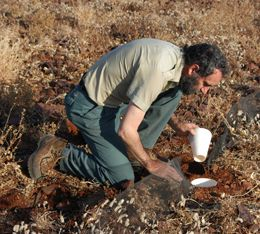
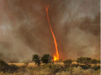
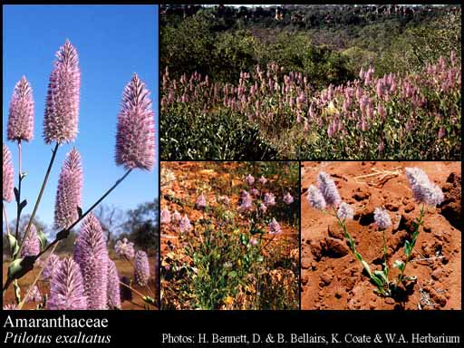
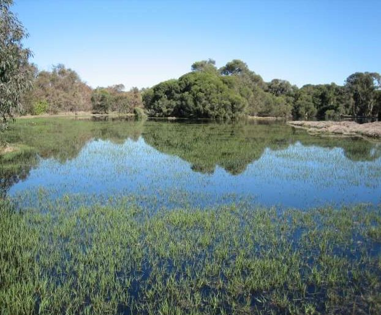

Regional Profiles
Explore spatial, climatic and biodiversity characteristics of IBRA subregions of Western Australia.
Explore »

Assets, Threats and Management
View threats and management implications for any asset at any region in an interactive,
searchable summary of threatened taxa assessments.
Dive into the data »
Trends and Metrics
Explore the status and trends of biodiversity assets.
Get the answers »
Regional profiles
Discover the biodiversity of terrestrial bioregions.
Terrestrial biodiversity assets are summarised by IBRA subregions.
Click any terrestrial region to access:
A spatial profile:
Description and characteristics of the IBRA subregion
History of land degradation
Decree of intactness, remnant vegetation, current status and trends
Tenure and land uses, current status and trends
Past, present and projected climate
Interactive data portals to view and filter:
Threatened and priority species (Fauna and Flora)
Threatened and priority ecological communities
Wetlands
Back to top
Assets, Threats & Management
Browse threatened taxa, communities and wetlands by region and taxon
Current condition and conservation status
Past pressures
Future threats
Research gaps
Management requirements
Relevant management or recovery plans
Notes on species diversity, endemicity, climate refugia

Flora
Browse Threatened Flora data
Browse »

Wetlands
Browse Threatened Communities data
Browse »
The filtered view is an advanced, interactive data portal which allows to select the region
(scale)
and/or taxon (scientific of common name) and conservation status of interest
to view our latest knowledge of ecological details, threats and management actions about a taxon in a
region.
Be aware that data come from a read-only source and any changes will be discarded. Do not use this interface
to update data.
Back to top
Back to top
Biodiversity Audit II © Keith Claymore, Karl Brennan, Jelena May DPaW 2012-2014 with contributions from
GIS section, Science and Conservation Division, and Regional Services.
Biodiversity Explorer web portal © 2015 Ecoinformatics Program, Science and Conservation Division,
Department of Parks and Wildlife
View source code (MIT license) ·
Get in touch